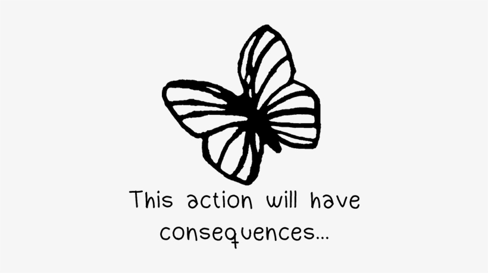

Que es life is strange?
La saga de life is strange se basa en historias sobre personas con "poderes sobrenaturales" que cambia su forma de interactuar con el entorno. Por ejemplo en LIS 1 controlamos a max, quien es una chica con el poder de retroceder en el tiempo.

Como se juega?
Es importante aclarar que es un juego donde TUS ACCIONES INFLUYEN EN EL MUNDO QUE TE RODEA, por lo que cada accion por mas pequeña que sea, cambiara como se desarrolle la historia. Cabe aclarar que se te mostrara un simbolo unico para saber que tu ultima accion tendra una consecuencia.

Actualmente solo les puedo hablar sobre los primeros juegos pero proximamente traere mi reseña sobre los otros!.